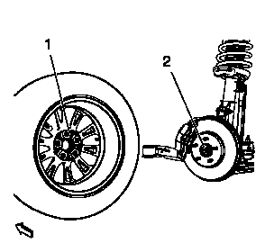
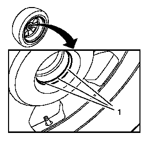
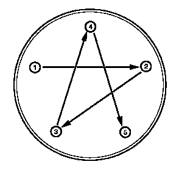

轮胎和车轮的拆卸和安装
拆卸程序
- 1.举升并妥善支撑车辆。举升和顶起车辆
-
2.拆下车轮中心盖。

- 3.标记车轮 (2) 相对于轮毂的位置。
- 4.拆下车轮螺母 (1)。
-
警告：如果渗透性机油沾到车轮和制动盘或制动鼓之间的垂直表面上，则在车辆行驶时会导致车轮松动，造成车辆失控和伤人事故。5.将轮胎和车轮总成 (2) 从车辆上拆下。告诫：如果存在异物或者车轮与轮毂/制动盘贴合的过紧，则拆卸车轮时可能会遇到困难。使用橡胶锤轻轻拍打轮胎侧面以拆卸车轮。不遵循此说明可能会导致车轮损坏。
安装程序
-
警告：安装车轮之前，去除车轮支座面、制动鼓或制动盘支座面上的锈蚀。安装车轮时如安装面金属之间接触不紧密，则会造成车轮螺母松动。这将导致车辆行驶时车轮脱落，造成车辆失控，并可能造成人身伤害。1.清除车轮 (1) 和轮毂 (2) 安装面上的所有锈蚀或异物。警告：千万不要润滑车轮螺母、双头螺栓和支座面，或者向其抹油。车轮螺母、双头螺栓和安装面必须清洁干燥。紧固润滑过的零件会损害车轮双头螺栓。这将导致车辆行驶时车轮脱落，造成车辆失控，并可能造成人身伤害。
- 2.清洁车轮双头螺栓和车轮螺母上的螺纹。
-
3.为阻止中间座椅卡入车轮，安装之前用轴承油脂轻轻涂抹在轮辋的内侧中间座椅 (1) 上。注意:通过使用中间孔或车轮双头螺栓将轮盘与前轮毂对准。
- 4.安装轮胎和车轮总成。将车轮定位标记对准轮毂。
-
5.安装车轮螺母。
-
告诫： 有关紧固件的告诫6.按图示顺序将车轮螺母紧固至140N•m（103 lb ft）。注意:按图示顺序均匀地交替紧固螺母，以避免跳动量过大。
- 7.安装车轮中心盖。
- 8.降下车辆。